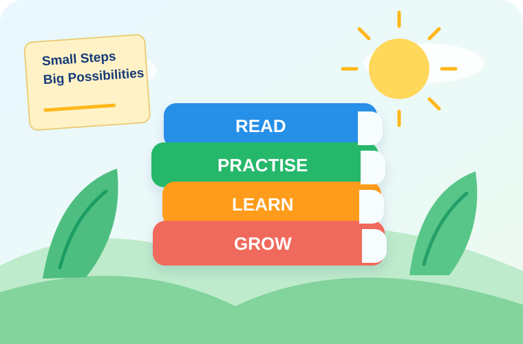

Practice questions
Try focused questions at your own pace.
Start at the right level, then choose a subject and topic.
Build strong foundations with clear, age-appropriate learning pathways.

Pick one area and continue at your own pace.
Number, operations, measurement and problem solving.
WRITEWriting, grammar, spelling and language skills.
READFluency, comprehension and understanding texts.
WORDSWord meaning, spelling and confident use.
EXPLORELiving things, Earth, materials and everyday science.
WORLDAustralia, places, nature and the wider world.
Focused practice, progress checks and challenge activities for Year 5.
Try focused questions at your own pace.
See improvement and revisit weaker areas.
Check what you know after practice.
Simple navigation without unnecessary distractions.
Choose a subject, practise a little, and keep moving forward.